◆「復刻 Fate/Apocrypha×Fate/Grand Order特別活動Pick Up召喚(每日交替)」期間◆
期間:2020年3月25日(三) 17:00～4月8日(三) 11:59
舉辦期間限定「復刻 Fate/Apocrypha×Fate/Grand Order特別活動Pick Up召喚(每日交替)」！
※就算未滿足活動參加條的狀態也挳進行本召喚。
從期間限定Fate/Apocrypha×Fate/Grand Order特別活動「復刻版:Apocrypha/Inheritance of Glory -Triumphal-」關聯從者之中下述的從者以期間限定登場！
・★5(SSR)阿斯托爾福(Saber)
・★5(SSR)賽米拉米斯
・★5(SSR)天草四郎
包含上述從者，下述的從者以每日交替Pick Up！ ・★5(SSR)阿斯托爾福(Saber) ・★5(SSR)莫德雷德(Saber) ・★5(SSR)阿基里斯 ・★5(SSR)開膛手傑克 ・★5(SSR)賽米拉米斯 ・★5(SSR)弗拉德三世(Berserker) ・★5(SSR)天草四郎
另外，下述的從者常駐Pick Up！ ・★4(SR)齊格飛 ・★4(SR)阿塔蘭塔 ・★4(SR)凱隆 ・★4(SR)阿斯托爾福(Rider) ・★4(SR)阿塔蘭塔〔Alter〕 ・★4(SR)弗蘭肯斯坦(Berserker) ・★3(R)阿維斯布隆
並且，2018年的「Fate/Apocrypha×Fate/Grand Order特別活動Pick Up召喚」中登場的下述的期間限定概念禮裝常駐Pick Up！ ・★5(SSR)彼方への巡礼 ・★4(SR)刹那のまほろば ・★3(R)出発進行！ 裝備上述3種概念禮裝的話，在特別活動「復刻版:Apocrypha/Inheritance of Glory -Triumphal-」中會提升活動道具的掉落獲得數。
Pick Up期間中，Pick Up對象從者與概念禮裝的出現機率提升！
詳情請在聖晶石召喚畫面左下的召喚詳細確認。
11次召喚中確定1張★4(SR)以上和確定1位★3(R)以上的從者！ ※確定★4(SR)以上包含從者和概念禮裝。 ※本頁面皆為開發中圖片。會有與實際圖片相異的情況。
◆有關從者的注意◆
※請注意本召喚做為每日交替，下述的從者就算舉辦期間中也有不會被抽出來的日子。
・★5(SSR)阿斯托爾福(Saber)
・★5(SSR)賽米拉米斯
・★5(SSR)天草四郎
※下述的從者在Pick Up期間結束後不會追加到故事召喚。
・★5(SSR)阿斯托爾福(Saber)
・★5(SSR)賽米拉米斯
・★5(SSR)天草四郎
※下述的從者在Pick Up期間結束後仍會在故事召喚被抽出。
・★5(SSR)莫德雷德(Saber)
・★5(SSR)阿基里斯
・★5(SSR)開膛手傑克
・★5(SSR)弗拉德三世(Berserker)
・★4(SR)齊格飛
・★4(SR)阿塔蘭塔
・★4(SR)凱隆
・★4(SR)阿斯托爾福(Rider)
・★4(SR)阿塔蘭塔〔Alter〕
・★4(SR)弗蘭肯斯坦(Berserker)
・★3(R)阿維斯布隆
◆有關概念禮裝的注意◆
※下述的概念禮裝，就算Pick Up期間中能靠友情點數召喚獲得。
・★3(R)出発進行！
※請注意在自動變還設定登錄★3(R)概念禮裝的情況，下述的概念禮裝會是自動變還的對象。
・★3(R)出発進行！
◆「復刻 Fate/Apocrypha×Fate/Grand Order特別活動Pick Up召喚(每日交替)」Pick Up內容◆
| Pick Up期間 | Pick Up內容 | |
|---|---|---|
| 每日交替Pick Up | 全天Pick Up | |
| 3/25(三) 17:00～22:59 | ★5 阿基里斯 |
★4 齊格飛 ★4 阿塔蘭塔 ★4 凱隆 ★4 阿斯托爾福(Rider) ★4 阿塔蘭塔〔Alter〕 ★4 弗蘭肯斯坦(Berserker) ★3 阿維斯布隆 |
| 3/25(三) 23:00～3/26(四) 22:59 | ★5 阿斯托爾福(Saber) | |
| 3/26(四) 23:00～3/27(五) 22:59 | ★5 天草四郎 | |
| 3/27(五) 23:00～3/28(六) 22:59 | ★5 賽米拉米斯 | |
| 3/28(六) 23:00～3/29(日) 22:59 | ★5 莫德雷德(Saber) | |
| 3/29(日) 23:00～3/30(一) 22:59 | ★5 開膛手傑克 | |
| 3/30(一) 23:00～3/31(二) 22:59 | ★5 弗拉德三世(Berserker) | |
| 3/31(二) 23:00～4/1(三) 22:59 | ★5 阿基里斯 | |
| 4/1(三) 23:00～4/2(四) 22:59 | ★5 阿斯托爾福(Saber) | |
| 4/2(四) 23:00～4/3(五) 22:59 | ★5 天草四郎 | |
| 4/3(五) 23:00～4/4(六) 22:59 | ★5 賽米拉米斯 | |
| 4/4(六) 23:00～4/5(日) 22:59 | ★5 莫德雷德(Saber) | |
| 4/5(日) 23:00～4/6(一) 22:59 | ★5 開膛手傑克 | |
| 4/6(一) 23:00～4/7(二) 22:59 | ★5 弗拉德三世(Berserker) | |
| 4/7(二) 23:00～4/8(三) 11:59 | ★5 阿基里斯 | |
※請注意會以每日交替變更Pick Up的從者。
 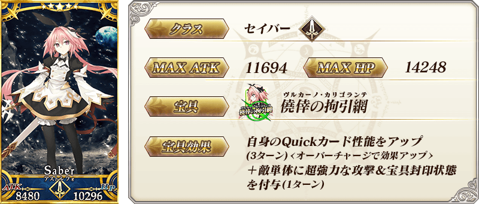
※上述「★5(SSR)阿斯托爾福(Saber)」的卡面為靈基再臨第3階段。
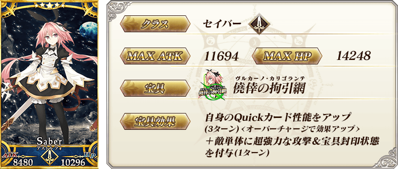
※上述「★5(SSR)阿斯托爾福(Saber)」的卡面為靈基再臨第3階段。


 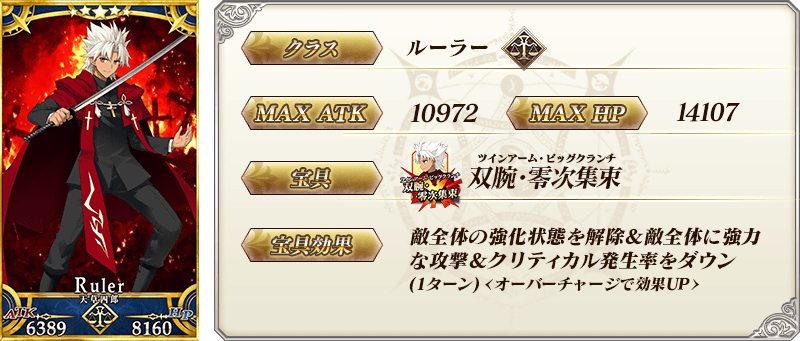
※上述「★5(SSR)天草四郎」的卡面為靈基再臨第2階段。
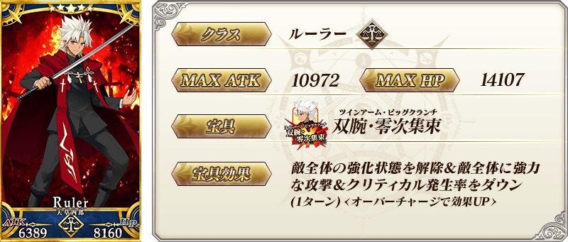
※上述「★5(SSR)天草四郎」的卡面為靈基再臨第2階段。

 ※上述「★5(SSR)莫德雷德(Saber)」的卡面為靈基再臨第2階段。
※上述「★5(SSR)莫德雷德(Saber)」的卡面為靈基再臨第2階段。
 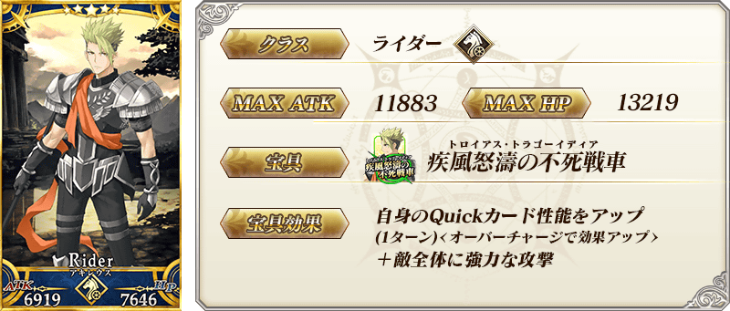
※上述「★5(SSR)阿基里斯」的卡面為靈基再臨第2階段。
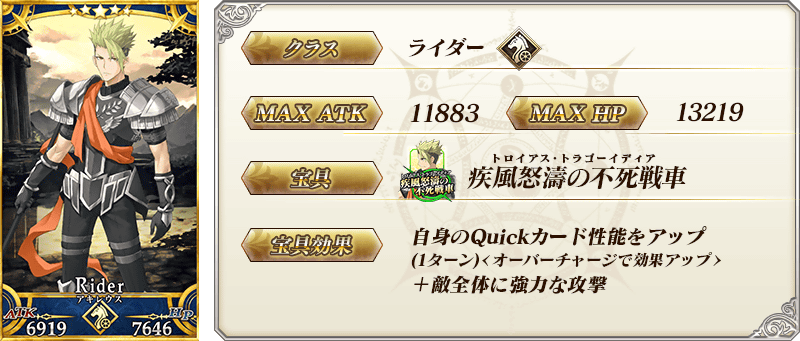
※上述「★5(SSR)阿基里斯」的卡面為靈基再臨第2階段。
 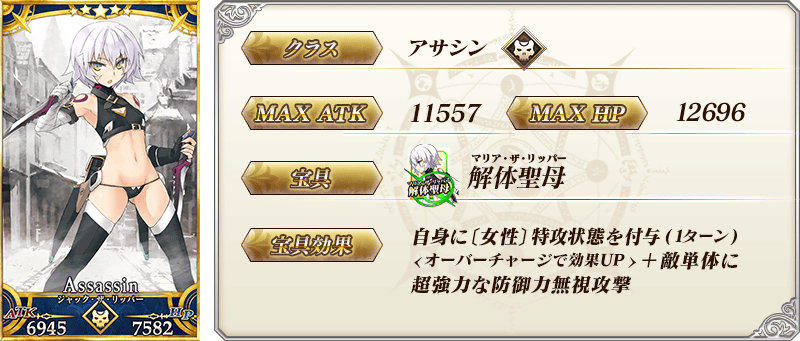
※上述「★5(SSR)開膛手傑克」的卡面為靈基再臨第2階段。
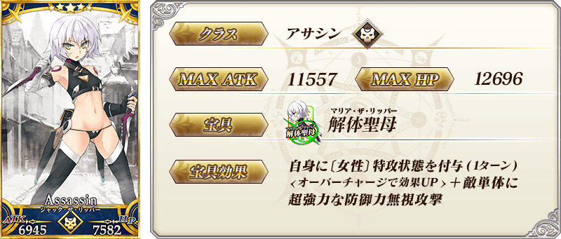
※上述「★5(SSR)開膛手傑克」的卡面為靈基再臨第2階段。
 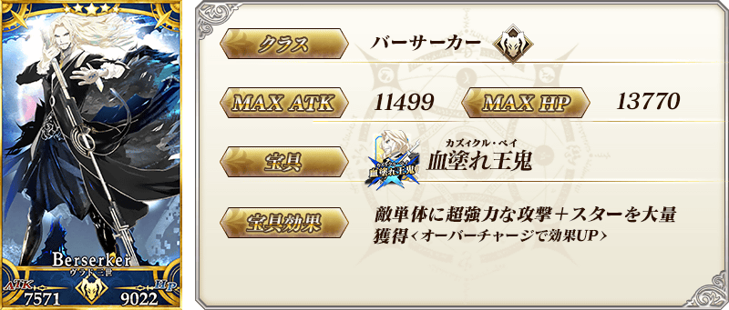
※上述「★5(SSR)弗拉德三世(Berserker)」的卡面為靈基再臨第2階段。
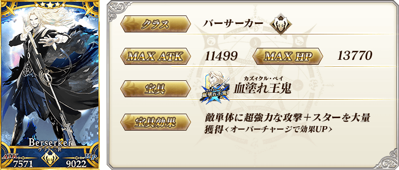
※上述「★5(SSR)弗拉德三世(Berserker)」的卡面為靈基再臨第2階段。

 ※上述「★4(SR)齊格飛」的卡面為靈基再臨第2階段。
※上述「★4(SR)齊格飛」的卡面為靈基再臨第2階段。
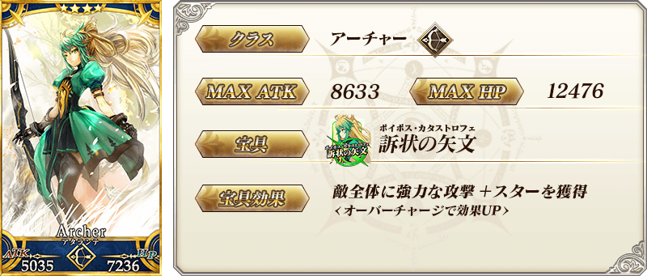 ※上述「★4(SR)阿塔蘭塔」的卡面為靈基再臨第2階段。
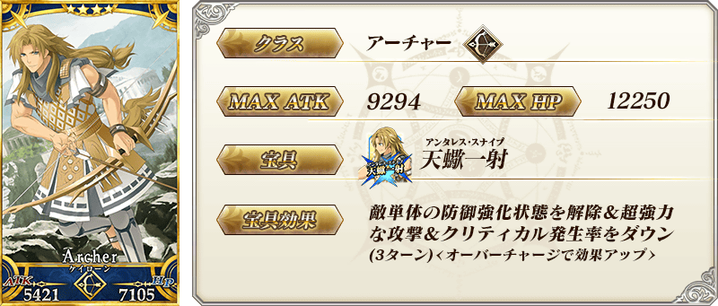 ※上述「★4(SR)凱隆」的卡面為靈基再臨第2階段。
 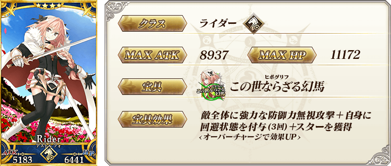
※上述「★4(SR)阿斯托爾福(Rider)」的卡面為靈基再臨第2階段。
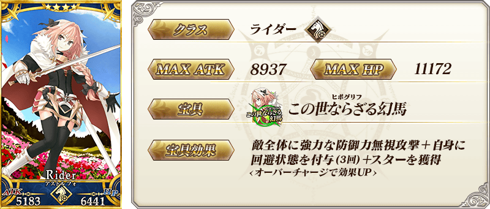
※上述「★4(SR)阿斯托爾福(Rider)」的卡面為靈基再臨第2階段。

 ※上述「★4(SR)阿塔蘭塔〔Alter〕」的卡面為靈基再臨第2階段。
※上述「★4(SR)阿塔蘭塔〔Alter〕」的卡面為靈基再臨第2階段。
 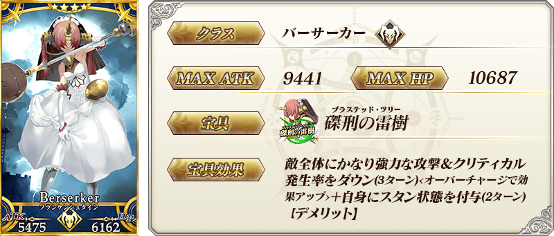
※上述「★4(SR)弗蘭肯斯坦(Berserker)」的卡面為靈基再臨第2階段。
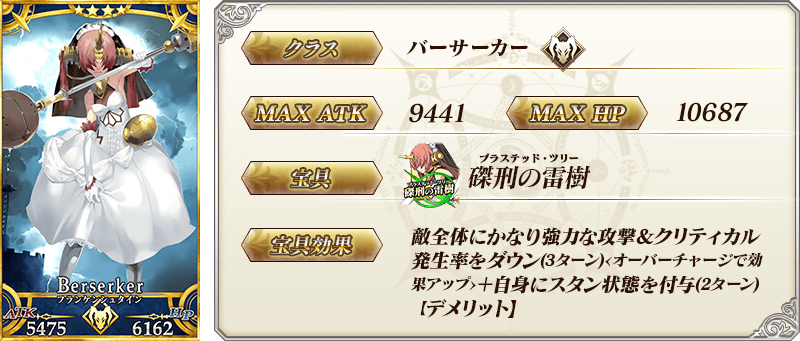
※上述「★4(SR)弗蘭肯斯坦(Berserker)」的卡面為靈基再臨第2階段。
 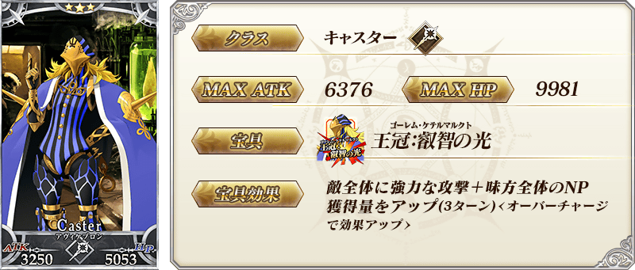
※上述「★3(R)阿維斯布隆」的卡面為靈基再臨第2階段。
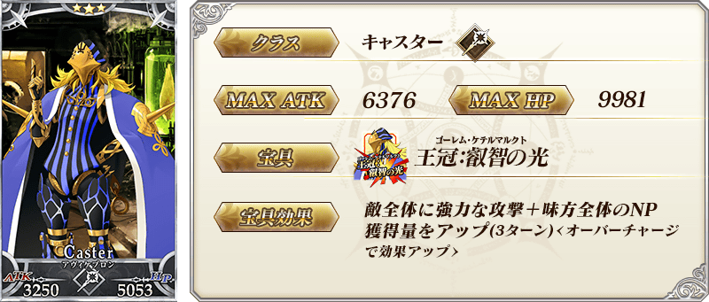
※上述「★3(R)阿維斯布隆」的卡面為靈基再臨第2階段。
| 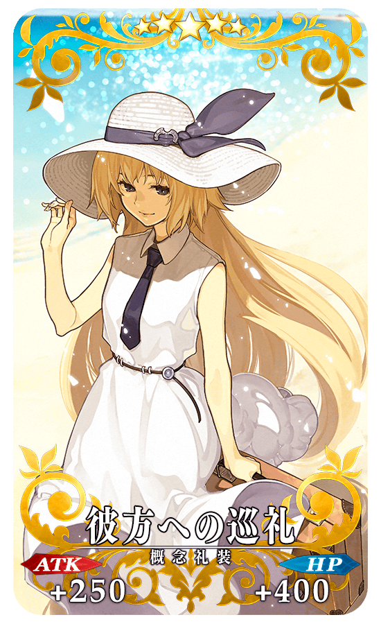 |
★★★★★SSR |
| 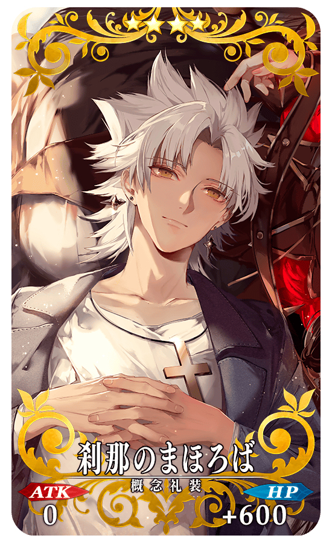 |
★★★★SR |

|
★★★R |

做為特別活動「復刻版:Apocrypha/Inheritance of Glory -Triumphal-」的報酬，「★5(SSR)莫德雷德(Saber)」的靈衣開放權登場！
可入手上述靈衣開放權做為本活動的活動道具交換報酬。
另外，想要靈衣開放的話，除了靈衣開放權外必須再加上一些開放條件。
◆有關靈衣開放權的注意◆
※「★5(SSR)莫德雷德(Saber)」的靈衣開放權只限本活動的活動道具交換期間才能入手。
※本次追加的「★5(SSR)莫德雷德(Saber)」靈衣，會與外觀一起變化一部份份語音変。
※請注意未持有「★5(SSR)莫德雷德(Saber)」的情況，可入手靈衣開放權。但無法進行靈衣開放。


「靈衣開放」是自強化畫面進行す。
※「靈衣開放」後會自動切換戰鬥角色和圖示。若想回到「靈衣開放」前的狀態和變成其他再臨階段的情況，可自從者詳細畫面變更。 ※透過「靈衣開放」不會讓職階和數值有所變化。

介紹開放靈衣「圖里法斯的記憶」的「★5(SSR)莫德雷德(Saber)」寶具演出！
在「Fate/Grand Order」官方網站內的公告中，以影片公開寶具演出，敬請確認。

翻新「★5(SSR)開膛手傑克」的戰鬥動作及寶具演出！
在「Fate/Grand Order」官方網站內的公告中，以影片公開寶具演出，敬請確認。
◆翻新實施時間◆
2020年3月25日(三) 17:00～

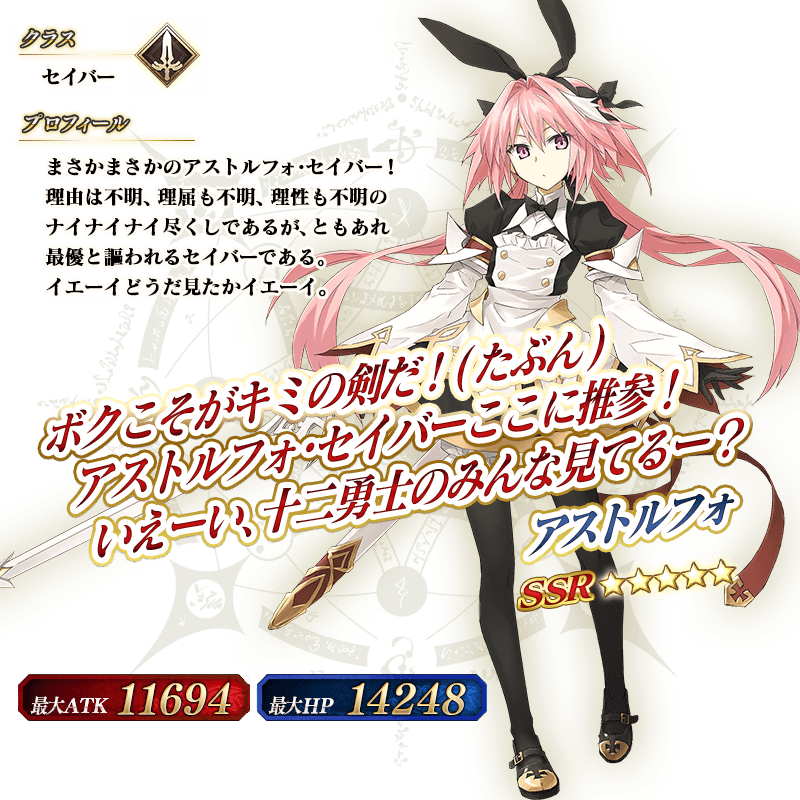 ※上述「★5(SSR)阿斯托爾福(Saber)」的立繪為靈基再臨第3階段。


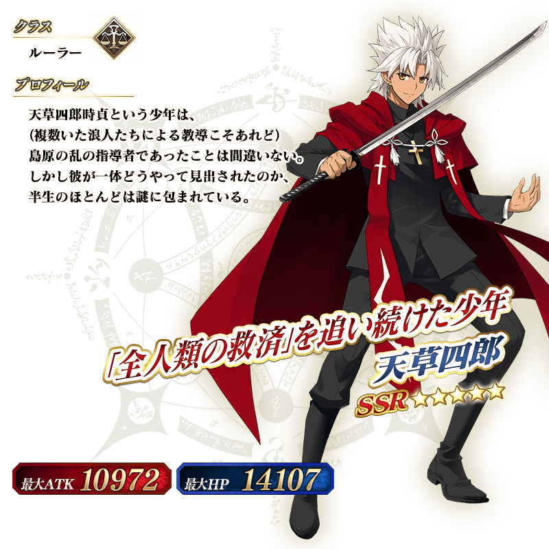 ※上述「★5(SSR)天草四郎」的立繪為靈基再臨第2階段。
 ※上述「★5(SSR)莫德雷德(Saber)」的立繪為靈基再臨第2階段。
※上述「★5(SSR)莫德雷德(Saber)」的立繪為靈基再臨第2階段。
 ※上述「★5(SSR)阿基里斯」的立繪為靈基再臨第2階段。
※上述「★5(SSR)阿基里斯」的立繪為靈基再臨第2階段。
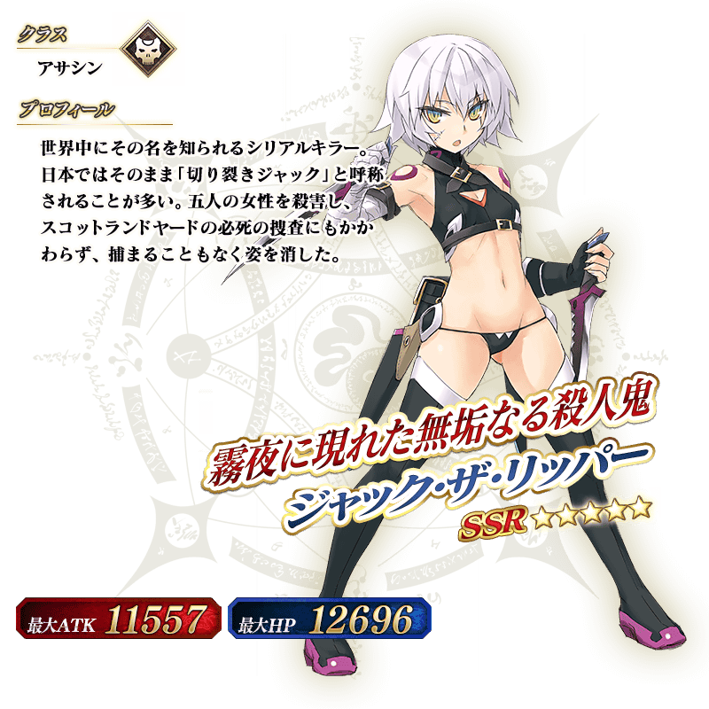 ※上述「★5(SSR)開膛手傑克」的立繪為靈基再臨第2階段。
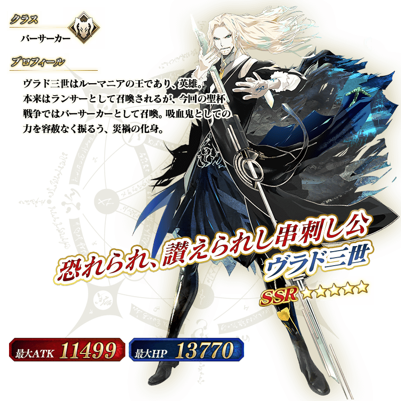 ※上述「★5(SSR)弗拉德三世(Berserker)」的立繪為靈基再臨第2階段。
介紹在本召喚Pick U的6位★5(SSR)從者的寶具演出！
在「Fate/Grand Order」官方網站內的公告中，以影片公開寶具演出，敬請確認。
【★5(SSR)阿斯托爾福(Saber)】
【★5(SSR)賽米拉米斯】
【★5(SSR)天草四郎】
【★5(SSR)莫德雷德(Saber)】
【★5(SSR)阿基里斯】
【★5(SSR)弗拉德三世(Berserker)】
其他還有，特別活動「復刻版:Apocrypha/Inheritance of Glory -Triumphal-」同時舉辦！
關於詳情，請自下述橫幅確認。
■「復刻版:Apocrypha/Inheritance of Glory -Triumphal-」詳細情報